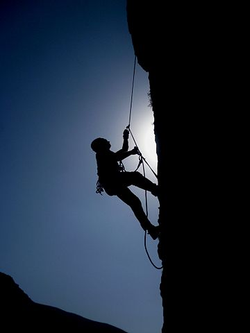
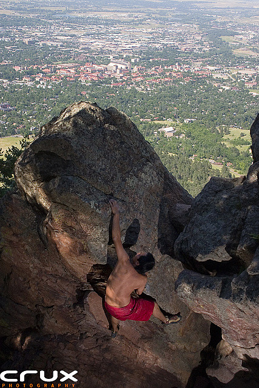
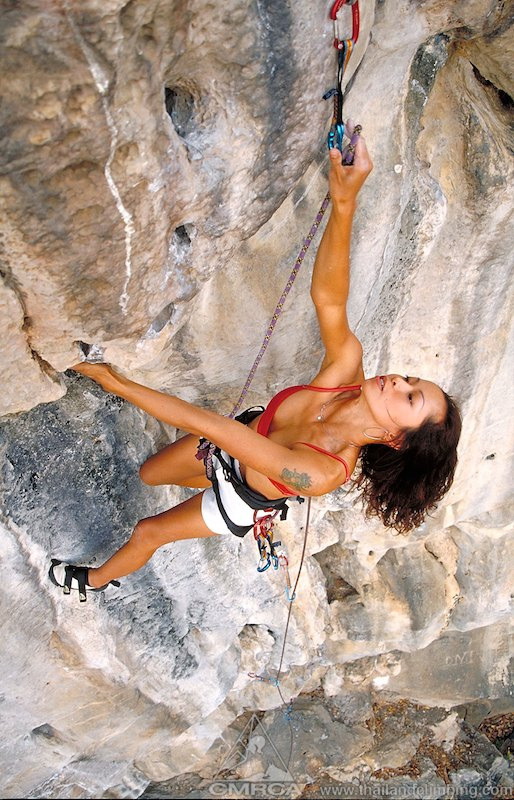

 The harder you fall, the heavier your heart; the heavier your
heart, the stronger you climb; the stronger you climb, the higher your
pedestal. - Criss Jami
Sign Up Here!
is an activity in which participants climb up, down or across natural rock
formations or artificial rock walls. The goal is to reach the summit of a
formation or the endpoint of a usually pre-defined route without falling. To
successfully complete a climb, one must return to the base of the route safely.
Due to the length and extended endurance required, accidents are more likely to
happen on descent than ascent, especially on the larger multiple pitches (class
III- IV and /or multi-day grades IV-VI climbs). Rock climbing competitions have
the objectives of either completing the route in the quickest possible time or
attaining the farthest point on an increasingly difficult route. Scrambling,
another activity involving the scaling of hills and similar formations, is
similar to rock climbing. However, rock climbing is generally differentiated
by its sustained use of hands to support the climber's weight as well as to
provide balance.
Rock climbing is a physically and mentally demanding sport, one that often
tests a climber's strength, endurance, agility and balance along with mental
control. It can be a dangerous sport and knowledge of proper climbing techniques
and usage of specialised climbing equipment is crucial for the safe completion of
routes. Because of the wide range and variety of rock formations around the
world, rock climbing has been separated into several different styles and
sub-disciplines.[1] While not an Olympic event, rock climbing is recognized
by the International Olympic Committee as a sport
Types of Rock climbing
Aid climbing
Free climbing
Bouldering
Lead climbing
Aid Climbing
is a style of climbing in which standing on or pulling oneself up via devices
attached to fixed or placed protection is used to make upward progress. The term
contrasts with free climbing in which progress is made without weighting
artificial aids: a free climber ascends by only holding onto and stepping on
natural features of the rock, using rope and equipment merely to catch them in
case of fall and provide belay.
In general, aid techniques are reserved for pitches where free climbing is
difficult to impossible, and extremely steep and long routes demanding great
endurance and both physical and mental stamina. While aid climbing places less
emphasis on athletic fitness and raw strength than free climbing, the physical
demands of hard aid climbing should not be underestimated.
Aid climbing is sometimes errantly referred to as class 6 climbing, since its
reliance on ascent by one's equipment rather than merely being protected by it
is regarded by purists as falling outside the traditional Classes 1-5 Yosemite
Decimal System rankings that rely on making progress with one's hands and feet
in direct contact with the rock alone. Aid climbing has its own ranking system,
using a separate scale from A0 through A5.[1]
is a specific rock climbing term that was created in contrast with aid
climbing. It refers to climbs in which climbing protection such as ropes, tri-cams
, nuts, and other aid-climbing equipment, may be used to protect against injury
during falls, but cannot be used in ascending the climb. The term free climbing
originally meant "free from aid".[1] Free climbing includes solo climbing,
traditional climbing, sport climbing and bouldering. In contrast, in aid climbing,
climbing equipment is used to assist the climber in ascending the climb and can
include a means for pulling the climber upward or providing points where the
climber can stand on equipment to assist in the climb.
is a form of rock climbing that is performed without the use of ropes or
harnesses. While it can be done without any equipment whatsoever, most climbers
use climbing shoes to help secure footholds, chalk to keep their hands dry, and
bouldering mats to prevent injuries from falls. Unlike free solo climbing, which
is also performed without ropes, bouldering problems (the path that a climber
takes in order to complete the climb) are usually less than 20 feet tall.
Artificial climbing walls allow boulderers to train indoors in areas without
natural boulders. Bouldering competitions, which employ a variety of formats,
take place in both indoor and outdoor settings.
Bouldering Climbing Location
Horse flats
Bishop
Santa Barbara
Tuolumne Meadows
 Bouldering ( like free climb but instead climbing boulders).
Lead climbing
is a climbing technique used to ascend a route. This technique is
predominantly used in rock climbing and involves a lead climber attaching
themselves to a length of dynamic (elastic) climbing rope and ascending a
route while periodically attaching protection (quickdraws or traditional
protection) to the face of the route and clipping into it. The lead climber must
have another person acting as a belayer. The belayer has multiple roles: holding
the rope in the event of a fall, and paying out or taking up rope as the climber
moves.
As lead climbing does not require a pre-placed anchor at the top of the route,
it is often seen as less restricted than top roping. Also, because a lead
climber does not have an anchor point above them while climbing, only the
limbs and body of the climber are used to affect upward progress. Protective
devices are only placed to catch the climber in the event of a fall.
Lead Climbing Location
Wichita Mountains
Echo Cliffs
Joshua Tree
Buttermilks
 Lead Climbing (Climbing with no anchor points).